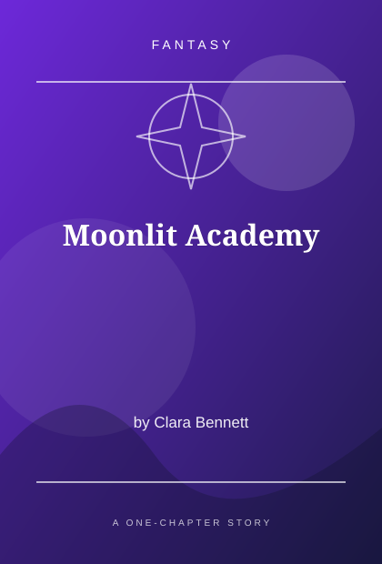
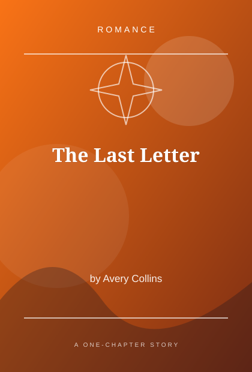

YOUR NEXT FAVORITE STORY STARTS HERE
Stories that stay
with you.
Find a new world to fall into. Discover romance, mystery, fantasy, and more in our collection of original one-chapter reads.
Explore stories30original stories
10+genres to explore
1chapter each


✦Find your next escapeOne chapter. A whole new world.
THE STORY COLLECTION
Discover your next read
Thirty stories. Different worlds. One place to begin.
30 stories
MADE FOR STORY LOVERS
A small library of big feelings.
Orange Pages is a student-made storybook website inspired by online reading communities. Each book includes one original chapter, a synopsis, and an illustration.